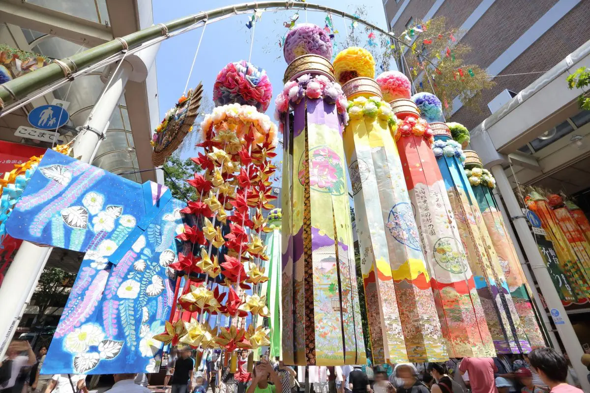

Summer

เล่นกระดานยืนพายที่อ่าวมัตสึชิมะกระดานยืนพาย (SUP) คือกีฬาทางน้ำที่มีต้นกำเนิดมาจากฮาวาย ตามชื่อ นี่คือกีฬาที่ต้องยืนบนกระดานโต้คลื่นและเคลื่อนที่ด้วยไม้พาย ที่จริงแล้วมีหลายสถานที่ในมิยางิที่คุณสามารถเล่นกระดานยืนพายได้ และอ่าวมัตสึชิมะก็เป็นหนึ่งในนั้น หลายคนที่มาเที่ยวที่มัตสึชิมะเลือกที่จะล่องเรือ เพื่อชมวิวทิวทัศน์ที่สวยงามของเกาะซึ่งขึ้นชื่อว่าเป็นหนึ่งในสามสถานที่ที่สวยงามที่สุดของญี่ปุ่น แต่ถ้าเล่นกระดานยืนพาย คุณจะได้เพลิดเพลินกับความสวยงามของโขดหินและต้นสนของเกาะ รวมถึงแสงสะท้อนบนผิวน้ำอย่างใกล้ชิด มีกลุ่มทัวร์ท้องถิ่นมากมายที่เสนอการท่องเที่ยวด้วยกระดานยืนพาย เช่น Yayu และ Hannah Firm คุณสามารถจองทัวร์เหล่านั้นได้ทางเว็บไซต์อย่างเป็นทางการของผู้ให้บริการ
เพลิดเพลินกับเทศกาลเซ็นไดทานาบาตะในชุดยูกาตะ เทศกาลเซ็นไดทานาบาตะ จัดขึ้นในวันที่ 6 ถึง 8 สิงหาคมของทุกปี และเป็นการฉลองเทศกาลทานาบาตะที่ใหญ่ที่สุดในญี่ปุ่น เทศกาลนี้มีชื่อเสียงโด่งดังมากจนได้ชื่อว่าเป็นหนึ่งในสามเทศกาลอันยิ่งใหญ่ของโทโฮคุ คู่กับเทศกาลคันโตของอาคิตะและเทศ กาลเนบูตะของอาโอโมริ ในช่วงเทศกาล บริเวณศูนย์กลางเมืองจะได้รับการตกแต่งด้วยพู่ยักษ์สีสันสดใสห้อยระย้าเหนือถนนช็อปปิ้งของเซ็นได ถ้าเป็นเรื่องเทศกาลฤดูร้อนในญี่ปุ่น คุณไม่ควรพลาดการเดินเล่นในชุดยูกาตะ คุณสามารถจองชุดทางออนไลน์กับร้านเช่าชุดกิโมโน เช่น อุเมะ ลัฟ ซึ่งพร้อมที่จะจัดเตรียมชุดยูกาตะที่สง่างามและให้บริการการแต่งตัวอย่างเป็นมืออาชีพ
.png)